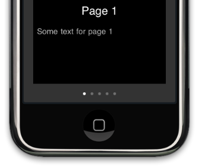

Please note: this article is part of the older "Objective-C era" on Cocoa with Love. I don't keep these articles up-to-date; please be wary of broken code or potentially out-of-date information. Read "A new era for Cocoa with Love" for more.
Multiple virtual pages in a UIScrollView with just 2 child views
The UIScrollView and UIPageControl in Cocoa Touch allow for user interfaces with multiple panning pages. The sample project that Apple provides (PageControl) keeps all child views for every page in a lazily loaded array. I'll show you how you can implement this using just two child views, no matter how many virtual pages you wish to represent.
First, something completely different...
Last week, Dan Grigsby of Mobile Orchard interviewed me about a post I wrote on Automated user interface testing on the iPhone. He posted the podcast of the interview online earlier this week, so I recommend you go listen if you're interested in the Director's Commentary for that earlier post.
Back to this post...
This week, I'm presenting the following application:
The black region is a UIScrollView with pagingEnabled set to YES. The dots at the bottom are a UIPageControl indicating the number of pages in the UIScrollView.
Apple's sample application "PageControl" presents a similar user interface that loads a different UIViewController and UIView for each of the pages in the UIScrollView. I'll show you how you can create the same effect using exactly two child UIViewControllers and UIViews — a "current" and the "next" view which leap around out-of-view to fill in each new page as the scrolling reaches it.
Fast display, slow content
The approach I will display is optimized for views that can redisplay quickly, once their data is loaded. The data may or may not be slow-to-load data so it is important that it is not loaded as part of the view.
Data is therefore loaded and cached in a separate, data-specific class. In the sample app, it will be a class named DataSource that holds an array of page titles and page text — simple in this case but it's just a sample app.
Holding your data in a view-independent class is basic program design — as good programmers, I'm sure you always do this and never, ever have your UIViewControllers directly load and store your data. Ever.
Moving child views to maintain the illusion
The trick in this post is handling an arbitrary array of child pages using just two views. It will work as follows:
- Initially, the displayed view will be the
currentPageview. The next view will be configured to display the cached data for Page 1 - As the user begins scrolling to the right, the
nextPageis quickly moved into the location for the next page in the scrolling direction. At the same time as it is positioned,nextPageis configured with the data for Page 2. Neither of these configuration changes will be visible to the user. - As the scroll operation ends, the pointers for
currentPageandnextPageare swapped so thatcurrentPagenow points to the view displaying Page 2 andnextPagenow points to Page 1 - If the next scroll is to the left,
nextPageis already configured and in position. If the next scroll is to the right,nextPagewill be moved and configured as it was during the first scroll.
The code that chooses how to move the views as the scroll view scrolls (step 2 in the above description) looks like this:
- (void)scrollViewDidScroll:(UIScrollView *)sender
{
CGFloat pageWidth = scrollView.frame.size.width;
float fractionalPage = scrollView.contentOffset.x / pageWidth;
NSInteger lowerNumber = floor(fractionalPage);
NSInteger upperNumber = lowerNumber + 1;
if (lowerNumber == currentPage.pageIndex)
{
if (upperNumber != nextPage.pageIndex)
{
[self applyNewIndex:upperNumber pageController:nextPage];
}
}
else if (upperNumber == currentPage.pageIndex)
{
if (lowerNumber != nextPage.pageIndex)
{
[self applyNewIndex:lowerNumber pageController:nextPage];
}
}I've left off the final condition for size but it is a rarely invoked path for when very fast scrolling leaves the currentPage out of position and it needs to configure both pages.
The exchange of pointers at the end of scrolling (step 3 in the above description) is handled in the scrollViewDidEndScrollingAnimation: method:
- (void)scrollViewDidEndScrollingAnimation:(UIScrollView *)newScrollView
{
CGFloat pageWidth = scrollView.frame.size.width;
float fractionalPage = scrollView.contentOffset.x / pageWidth;
NSInteger nearestNumber = lround(fractionalPage);
if (currentPage.pageIndex != nearestNumber)
{
PageViewController *swapController = currentPage;
currentPage = nextPage;
nextPage = swapController;
}
pageControl.currentPage = currentPage.pageIndex;
}The only remaining component to reveal is exactly how the pages are positioned and configured in applyNewIndex:pageController:
- (void)applyNewIndex:(NSInteger)newIndex pageController:(PageViewController *)pageController
{
NSInteger pageCount = [[DataSource sharedDataSource] numDataPages];
BOOL outOfBounds = newIndex >= pageCount || newIndex < 0;
if (!outOfBounds)
{
CGRect pageFrame = pageController.view.frame;
pageFrame.origin.y = 0;
pageFrame.origin.x = scrollView.frame.size.width * newIndex;
pageController.view.frame = pageFrame;
}
else
{
CGRect pageFrame = pageController.view.frame;
pageFrame.origin.y = scrollView.frame.size.height;
pageController.view.frame = pageFrame;
}
pageController.pageIndex = newIndex;
}You can see here that if a page is given an out-of-bounds index, it is placed below the bottom of the scroll view (invisible). I chose not to use setHidden: on the view because this resulted in "pop-in" when making the view visible again.
The actual configuration of the view for the new page index happens in the setter method for pageController.pageIndex. This method fetches the data for the page out of the DataSource and configures the view for displaying that page.
- (void)setPageIndex:(NSInteger)newPageIndex
{
pageIndex = newPageIndex;
if (pageIndex >= 0 &&
pageIndex < [[DataSource sharedDataSource] numDataPages])
{
NSDictionary *pageData =
[[DataSource sharedDataSource] dataForPage:pageIndex];
label.text = [pageData objectForKey:@"pageName"];
textView.text = [pageData objectForKey:@"pageText"];
}
}Notice that I've made this method tolerant of out-of-bounds indices. This is because while out-of-bounds indices are invalid for data from the DataSource, they can be valid locations for views in the scroll view (representing an offscreen position) so these positions must be permitted.
Offscreen UITextViews don't update correctly
If you take a look at the code for this sample project, you'll notice a method that I've added named updateTextViews: and a value I track named textViewNeedsUpdate.
These parts of the program exist because UITextView (used for the "Some text for Page X" display) don't update if they are offscreen (in this case: in an offscreen page of the UIScrollView). This behavior isn't a problem when the UITextView remains offscreen but becomes especially annoying when it is brought onscreen and still doesn't update.
I have addressed this in 2 ways:
- When an update is applied, check if the
UITextViewis offscreen. If it is, settextViewNeedsUpdatetoYES. I check this value regularly during a scroll, to see if theUITextViewhas appeared and update the view when it does. - In some fast scrolling cases (mostly when using the
UIPageControlinstead of theUIScrollViewto page) this still doesn't work — so I always force one update to thecurrentPageat the end of scrolling. This case can result in a visible update if your eyes are quick but it is an uncommon case.
Conclusion
You can download the complete Xcode 3.1 project for PagingScrollView (31kB).
It is possible to handle a paging scroll view using just 2 child views, no matter how many virtual pages you wish to support.
This approach assumes the views can be reconfigured to display a new virtual page quickly (normally a safe assumption). Remember that the data displayed need not be fast to load for the pages to reconfigure quickly because the data is loaded and cached in a separate object, independent of the paging.
The bug in UITextView is annoying. I've presented a means of getting around it, although I'd be happy to see a better approach.
Demystifying NSApplication by recreating it